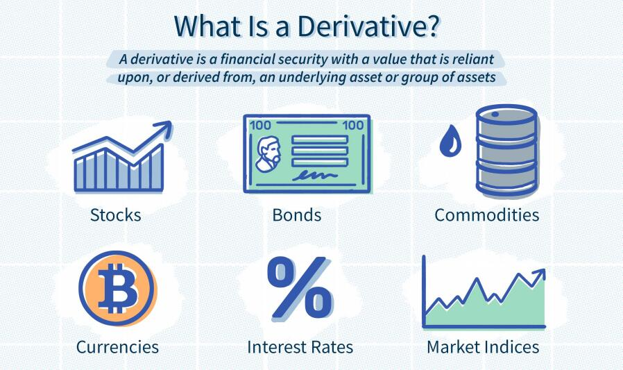
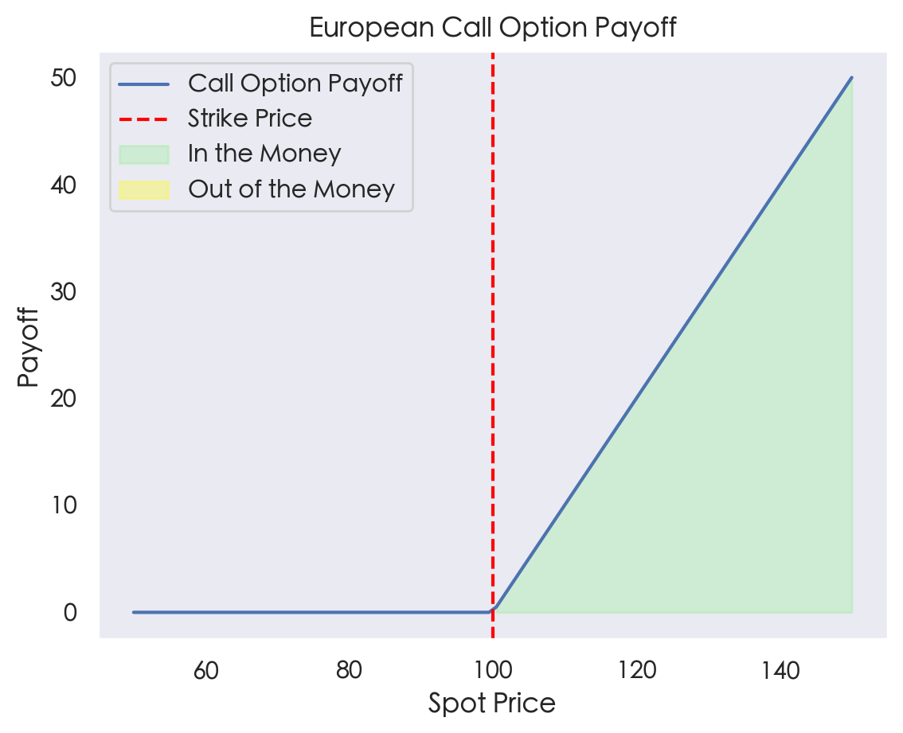
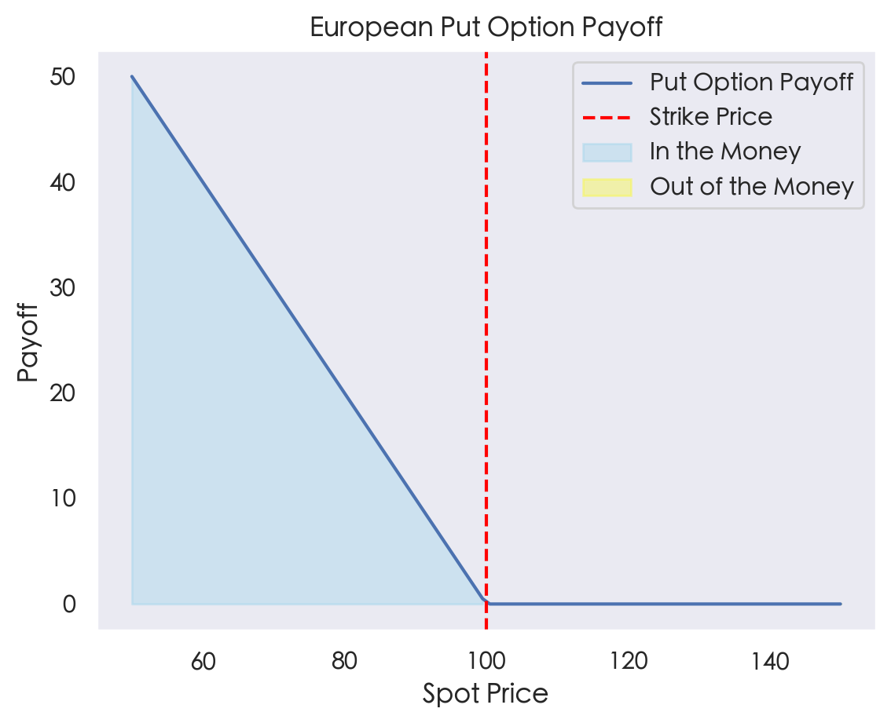
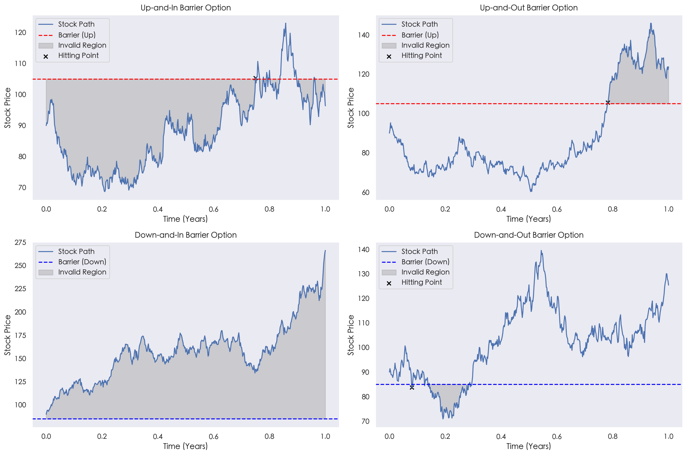

Introduction
1.1 Overview
This course addresses one of the central questions in mathematical finance: how should we price financial products? To answer this question, we will study:
- Discrete-time models (single-period and multi-period binomial trees, and an introduction to the trinomial model);
- Mathematical tools from stochastic calculus (continuous time):
- Brownian motion and quadratic variation,
- Itô's integral and Itô's lemma,
- Stochastic differential equations;
- Fundamental concepts for the valuation of derivatives:
- No-arbitrage pricing,
- Self-financing portfolios and Delta-hedging,
- Pricing via replication and partial differential equations (PDEs),
- Risk-neutral probability measures;
- The Black–Scholes model and its generalizations, applied to specific contracts such as European, American, barrier, and Asian options.
We begin by defining a financial derivative.
A financial derivative is a contract between two parties that specifies conditions under which payments are to be made between them. The value of the derivative is determined by the price of an underlying asset. The most common types of derivatives are forwards, futures, options, and swaps.

Financial derivatives play a crucial role in modern financial markets (see Figure 1.1). They are primarily used for risk management (hedging), operational flexibility, and speculation. Any tradable asset can serve as the underlying of a derivative, including stocks, bonds, currencies, oil, and agricultural commodities; in this course, the primary underlying asset is a stock.
A foundational principle of derivative pricing is that no guaranteed profit can be made without taking risk. This is known as the no-arbitrage assumption. If an arbitrage opportunity existed, market participants would exploit it immediately, driving prices back to equilibrium. In practice, any potential arbitrage is also constrained by transaction costs and market liquidity.
An arbitrage (or “free lunch”) is a trading opportunity that guarantees a riskless profit. Formally, over a time horizon \(t_0 < T\), an arbitrage is a self-financing portfolio (or trading strategy) with value process \(V(t)\) such that
\[ V(t_0) = 0, \qquad \Prob\bigl(V(T) \ge 0\bigr) = 1, \qquad \text{and} \qquad \Prob\bigl(V(T) > 0\bigr) > 0. \]Equivalently, a self-financing strategy with \(V(t_0) < 0\) and \(\Prob(V(T) \ge 0) = 1\) also constitutes an arbitrage, since investing the positive surplus \(-V(t_0)\) in the risk-free account produces a zero-cost portfolio with strictly positive terminal value.
We now introduce the most basic types of financial derivatives.
1.2 Forward Contracts
A forward contract is an agreement entered at time \(t = 0\) to buy (long position) or sell (short position) an underlying asset at a future maturity date \(T\) for a delivery price \(K\) agreed today. To the holder of the long position, the payoff of the forward contract at maturity \(T\) is
\[ V(T) = S(T) - K. \]Assume that the underlying asset pays no dividends over \([0, T]\), that short-selling is permitted, and that borrowing and lending take place at a constant continuously compounded risk-free interest rate \(r\). Consider two strategies initiated at \(t = 0\):
- Strategy A: Enter a long forward contract today to buy one share of the stock at maturity \(T\) for the delivery price \(K\).
- Strategy B: Borrow \(S_0\) from the bank at the risk-free rate \(r\), use the proceeds to buy one share of the stock, hold the share until maturity \(T\), and repay \(S_0 e^{rT}\) to the bank.
Both strategies require zero net initial cash outlay at \(t = 0\), as summarized in Table 1.1.
| Strategy | Net Cash Flow at \(t = 0\) | Terminal Value at \(t = T\) |
|---|---|---|
| Strategy A (Long forward) | \(0\) | \(S_T - K\) |
| Strategy B (Borrow \(S_0\) and buy stock) | \(0\) | \(S_T - S_0 e^{rT}\) |
Since both strategies cost \(0\) at \(t = 0\), the no-arbitrage principle implies that their terminal values must be identical; hence the fair forward price is
\[ K = S_0 e^{rT}. \]For example, if \(K < S_0 e^{rT}\), an investor can go long Strategy A and short Strategy B: enter the long forward contract, short-sell one share of the stock, and invest the proceeds \(S_0\) at the risk-free rate \(r\). This combined portfolio requires zero initial capital and yields a riskless profit of \(S_0 e^{rT} - K > 0\) at maturity \(T\). Conversely, if \(K > S_0 e^{rT}\), taking the opposite position yields a riskless profit of \(K - S_0 e^{rT} > 0\).
1.2.1 Cost-of-Carry with Dividends
In equity and index markets, the underlying asset typically distributes dividends over the life of the forward contract. Because the holder of a forward contract does not receive dividends prior to delivery, the fair forward price must be adjusted downward to reflect the foregone income.
Assume the market is arbitrage-free with a constant continuously compounded risk-free rate \(r\).
- Continuous dividend yield: If the underlying asset pays a continuous dividend yield \(q \ge 0\) (reinvested instantaneously into additional shares), the fair forward price at \(t = 0\) for maturity \(T\) is \[ F_0 = S_0 e^{(r - q)T}. \]
- Discrete known dividends: If the underlying asset pays deterministic cash dividends \(D_1, \dots, D_m\) at known dates \(0 < t_1 < \dots < t_m < T\), with total present value \(\mathrm{PV}(D) = \sum_{k=1}^{m} D_k e^{-r t_k}\), the fair forward price is \[ F_0 = \bigl(S_0 - \mathrm{PV}(D)\bigr) e^{rT}. \]
For the continuous dividend yield case, consider purchasing \(e^{-qT}\) shares of the underlying at \(t = 0\) and continuously reinvesting all dividends into additional shares. Over any small interval \(\dd t\), the share count \(N_t\) grows at rate \(\dd N_t = q N_t \dd t\), so \(N_T = N_0 e^{qT} = e^{-qT} e^{qT} = 1\) share at maturity \(T\). Financing the initial purchase \(S_0 e^{-qT}\) by borrowing at rate \(r\) requires zero initial capital and produces terminal payoff \(S_T - S_0 e^{(r - q)T}\). Comparing this zero-cost strategy with a long forward contract having delivery price \(F_0\) (terminal payoff \(S_T - F_0\)), the absence of arbitrage forces \(F_0 = S_0 e^{(r - q)T}\).
For the discrete dividend case, borrow \(S_0\) at \(t = 0\) to buy one share of the stock, splitting the loan into two parts: borrow \(\mathrm{PV}(D)\) to be repaid precisely by the incoming dividends \(D_k\) as they arrive (since \(\sum_{k=1}^{m} D_k e^{r(T - t_k)} = \mathrm{PV}(D) e^{rT}\)), and borrow the remaining \(S_0 - \mathrm{PV}(D)\) until maturity \(T\). This zero-cost portfolio holds one share at maturity \(T\) and owes \((S_0 - \mathrm{PV}(D)) e^{rT}\), giving terminal value \(S_T - (S_0 - \mathrm{PV}(D)) e^{rT}\). By no-arbitrage against a long forward contract, \(F_0 = (S_0 - \mathrm{PV}(D)) e^{rT}\). ◻
Suppose an equity index trades at \(S_0 = 100\) with continuously compounded risk-free rate \(r = 5\%\), continuous dividend yield \(q = 2\%\), and maturity \(T = 1\) year. By 1.2, the fair forward price is
\[ F_0 = 100\, e^{(0.05 - 0.02) \times 1} = 100\, e^{0.03} \approx 103.0455 \approx 103.05. \]The cost of acquiring \(e^{-qT} = e^{-0.02} \approx 0.9802\) shares at \(t = 0\) (which grow via continuous dividend reinvestment to exactly \(1\) share at \(t = 1\)) is \(S_0 e^{-qT} = 100\, e^{-0.02} \approx 98.0199\).
- Overpriced forward (\(K = 105 > F_0\)): Cash-and-Carry Arbitrage. We sell the overpriced forward at \(K = 105\), borrow \($98.0199\) at \(r = 5\%\), and purchase \(e^{-0.02} \approx 0.9802\) shares. At \(t = 1\), the reinvested stock position equals \(1\) share, which is delivered into the short forward for \($105\), while the bank loan requires repayment of \(98.0199\, e^{0.05} = 100\, e^{0.03} \approx $103.0455\). The cash flows are summarized in Table 1.2, yielding a riskless terminal profit of \($1.9545\) (present value \($1.9545\, e^{-0.05} \approx $1.8592\)).
- Underpriced forward (\(K = 101 < F_0\)): Reverse Cash-and-Carry Arbitrage. We enter a long forward at \(K = 101\), short-sell \(e^{-0.02} \approx 0.9802\) shares (funding the continuous dividend obligations by shorting additional fractional shares so that the short obligation grows to exactly \(1\) share at \(t = 1\)), and deposit the \($98.0199\) proceeds at \(r = 5\%\). At \(t = 1\), the deposit matures to \($103.0455\), we pay \($101\) under the forward to acquire \(1\) share and close the short position, and we lock in a riskless terminal profit of \($2.0455\) (present value \($2.0455\, e^{-0.05} \approx $1.9457\)), as shown in Table 1.3.
| Position | Cash Flow at \(t = 0\) | Cash Flow at \(t = 1\) |
|---|---|---|
| Short \(1\) forward at \(K = 105\) | \(0\) | \(105 - S_1\) |
| Buy \(e^{-0.02} \approx 0.9802\) shares (dividends reinvested) | \(-98.0199\) | \(+S_1\) |
| Borrow \($98.0199\) at \(r = 5\%\) | \(+98.0199\) | \(-103.0455\) |
| Net Cash Flow | \(\mathbf{0}\) | \(\mathbf{+1.9545}\) |
| Position | Cash Flow at \(t = 0\) | Cash Flow at \(t = 1\) |
|---|---|---|
| Long \(1\) forward at \(K = 101\) | \(0\) | \(S_1 - 101\) |
| Short \(e^{-0.02} \approx 0.9802\) shares (dividends compounded) | \(+98.0199\) | \(-S_1\) |
| Invest \($98.0199\) at \(r = 5\%\) | \(-98.0199\) | \(+103.0455\) |
| Net Cash Flow | \(\mathbf{0}\) | \(\mathbf{+2.0455}\) |
1.2.2 Forwards, Futures, and Central Clearing
While a forward contract is a customized bilateral agreement traded over the counter (OTC) with a single cash settlement at maturity \(T\), a futures contract is standardized and traded on an organized exchange. To eliminate bilateral counterparty credit risk, modern derivatives markets interpose a Central Counterparty (CCP)—a clearinghouse that becomes the buyer to every seller and the seller to every buyer. Both parties post initial margin as collateral, and positions undergo daily marking-to-market: at the close of each trading day \(t_k\), the change in the futures price \(\Phi_{t_k} - \Phi_{t_{k-1}}\) is immediately credited to or debited from each party's margin account as variation margin, resetting the contract's market value to zero.
Does daily marking-to-market change the fair price? When interest rates are deterministic, the answer is no: futures and forward prices coincide. To see why, partition \([0, T]\) into daily settlement dates \(0 = t_0 < t_1 < \dots < t_N = T\) and assume a constant risk-free rate \(r\). Consider a dynamic strategy that holds \(e^{-r(T - t_k)}\) long futures contracts over each interval \((t_{k-1}, t_k]\) and invests (or finances) every daily variation margin flow in the money market account until \(T\). At date \(t_k\), the mark-to-market cash flow is \(e^{-r(T - t_k)}(\Phi_{t_k} - \Phi_{t_{k-1}})\), which compounds over the remaining horizon \(T - t_k\) to exactly \(\Phi_{t_k} - \Phi_{t_{k-1}}\) at maturity \(T\). Summing over \(k = 1, \dots, N\) gives a telescoping sum:
\[ \sum_{k=1}^{N} (\Phi_{t_k} - \Phi_{t_{k-1}}) = \Phi_T - \Phi_0 = S_T - \Phi_0, \]since convergence at delivery forces \(\Phi_T = S_T\). Because entering futures contracts requires zero net purchase price (margin collateral earns the risk-free rate), this zero-cost strategy replicates the exact terminal payoff of a forward contract with delivery price \(K = \Phi_0\). By no-arbitrage, \(\Phi_0 = F_0\).
When interest rates \(\{r_t\}_{t \in [0, T]}\) are stochastic, however, the rolling hedge above cannot lock in future reinvestment rates, and futures prices diverge from forward prices by a convexity adjustment. Anticipating the risk-neutral valuation framework developed in Chapters 2 and 4, let \(P(0, T) = \E^{\Q}[e^{-\int_0^T r_u \dd u}]\) denote the time-\(0\) price of a zero-coupon bond maturing at \(T\). Under the risk-neutral measure \(\Q\), the forward price satisfies \(F_0 P(0, T) = \E^{\Q}[e^{-\int_0^T r_u \dd u} S_T]\), whereas daily marking-to-market makes the futures price a \(\Q\)-martingale, so \(\Phi_0 = \E^{\Q}[S_T]\). Using the identity \(\E^{\Q}[XY] = \E^{\Q}[X]\E^{\Q}[Y] + \Cov^{\Q}(X, Y)\), we obtain
\[ \Phi_0 - F_0 = -\frac{1}{P(0, T)}\, \Cov^{\Q}\!\left(e^{-\int_0^T r_u \dd u},\, S_T\right). \]Whenever \(S_T\) is positively correlated with interest rates \(r_t\), it is negatively correlated with the stochastic discount factor \(e^{-\int_0^T r_u \dd u}\), so \(\Phi_0 > F_0\): positive mark-to-market cash flows arrive when interest rates are high and can be reinvested at favorable rates, while losses occur when financing rates are low, making the long futures position strictly more valuable than the forward. Conversely, if \(S_T\) is negatively correlated with interest rates, then \(\Phi_0 < F_0\).
A companion Python implementation of the forward pricing formula 1.1 is provided in code/ch01_introduction.py.
1.3 European Vanilla Options
A European call option is a contract that gives its holder the right, but not the obligation, to buy the underlying asset at maturity date \(T\) for a predetermined strike price \(K\).
The terminal payoff of a European call option at maturity \(T\) is
\[ C(T) = \max\bigl(S(T) - K,\, 0\bigr) := \bigl(S(T) - K\bigr)^+, \]illustrated in Figure 1.2.

Unlike a forward contract, which is a binding commitment to buy the underlying asset, a call option gives the holder all of the upside potential while capping the downside loss at the initial premium paid. For instance, an oil consumer can purchase a call option on oil: if the oil price rises above \(K\) at maturity, the consumer can exercise the option and purchase oil at the lower strike price \(K\); the option is then said to be in the money. If the oil price falls below \(K\), the option expires worthless and is said to be out of the money.
A European put option is the downside counterpart to a call option: it gives its holder the right, but not the obligation, to sell the underlying asset at maturity date \(T\) for a predetermined strike price \(K\).
If the underlying price falls below \(K\) at maturity, the put option is in the money and the holder exercises it, obligating the option seller to purchase the asset at the strike price \(K\) despite the lower prevailing market price. The terminal payoff of a European put option at maturity \(T\) is
\[ P(T) = \max\bigl(K - S(T),\, 0\bigr) := \bigl(K - S(T)\bigr)^+, \]illustrated in Figure 1.3.

The call and put payoffs satisfy a fundamental, model-independent relation known as put–call parity.
Consider European call and put options written on the same non-dividend-paying underlying asset with identical strike price \(K\) and maturity \(T\), and suppose the market is arbitrage-free with a constant continuously compounded risk-free rate \(r\). Then, for all \(0 \le t \le T\),
\[ C_t - P_t = S_t - K e^{-r(T-t)}. \]At maturity \(T\), the call and put payoffs satisfy the algebraic identity
\[ C_T - P_T = (S_T - K)^+ - (K - S_T)^+ = S_T - K. \]Now fix any time \(t \in [0, T)\) and form a portfolio consisting of a long position in one call option, a short position in one put option, a short position in one share of the underlying asset, and an investment of \(K e^{-r(T-t)}\) in the risk-free account. The initial value of this portfolio at time \(t\) is
\[ V_t = C_t - P_t - S_t + K e^{-r(T-t)}, \]while its terminal value at maturity \(T\) is identically zero:
\[ V_T = C_T - P_T - S_T + K = (S_T - K) - S_T + K = 0. \]If \(C_t - P_t < S_t - K e^{-r(T-t)}\), then \(V_t < 0\); entering this portfolio at time \(t\) and investing the positive cash surplus \(-V_t\) in the risk-free account yields a zero-cost strategy with strictly positive terminal value \(-V_t e^{r(T-t)} > 0\), which is an arbitrage. Conversely, if \(C_t - P_t > S_t - K e^{-r(T-t)}\), then \(V_t > 0\), and taking the opposite position yields an arbitrage. By the absence of arbitrage, \(V_t = 0\), establishing 1.5. ◻
When the underlying asset pays a continuous dividend yield \(q \ge 0\), the exact same replication argument generalizes put–call parity by replacing one share of stock with \(e^{-q(T-t)}\) dividend-reinvesting shares.
Under the assumptions of Theorem 1.1, if the underlying asset pays a constant continuous dividend yield \(q \ge 0\), then for all \(0 \le t \le T\),
\[ C_t - P_t = S_t e^{-q(T-t)} - K e^{-r(T-t)}. \]At time \(t\), form a portfolio consisting of a long call, a short put, a short position in \(e^{-q(T-t)}\) shares of the underlying asset (with continuous dividend obligations compounded into additional short shares so that the short position grows to \(1\) share at maturity \(T\)), and an investment of \(K e^{-r(T-t)}\) in the risk-free account. The portfolio has time-\(t\) value
\[ V_t = C_t - P_t - S_t e^{-q(T-t)} + K e^{-r(T-t)} \]and terminal value \(V_T = (S_T - K)^+ - (K - S_T)^+ - S_T + K = 0\) in every state. By the absence of arbitrage, \(V_t = 0\), proving 1.6. ◻
Consider a non-dividend-paying stock (\(q = 0\)) with \(S_0 = 100\), risk-free rate \(r = 5\%\), and \(T = 1\) year. Suppose 1-year European options with strike \(K = 100\) trade at \(C_0 = 10\) and \(P_0 = 6\). Checking put–call parity 1.5, we find
\[ C_0 - P_0 = 10 - 6 = 4.0000 < S_0 - K e^{-rT} = 100 - 100\, e^{-0.05} \approx 100 - 95.1229 = 4.8771. \]The synthetic forward \(C_0 - P_0\) is underpriced relative to \(S_0 - K e^{-rT}\) by \($0.8771\). To lock in a riskless arbitrage profit with zero initial outlay, we buy the underpriced synthetic forward (long \(1\) call, short \(1\) put), short \(1\) share of the stock, and invest the entire net cash inflow of \(100 + 6 - 10 = $96.00\) in the risk-free account at \(r = 5\%\). At maturity \(T = 1\), the bank deposit grows to \(96\, e^{0.05} \approx $100.9220\), while the options and short stock always settle to \(-100\) regardless of \(S_1\), leaving a guaranteed terminal profit of \($0.9220\) (whose present value is \(0.9220\, e^{-0.05} \approx $0.8771\)), as detailed in Table 1.4.
| Position | Cash Flow at \(t = 0\) | Payoff at \(t = 1\) (\(S_1 \ge 100\)) | Payoff at \(t = 1\) (\(S_1 < 100\)) |
|---|---|---|---|
| Long \(1\) European call (\(K = 100\)) | \(-10.00\) | \(S_1 - 100\) | \(0\) |
| Short \(1\) European put (\(K = 100\)) | \(+6.00\) | \(0\) | \(-(100 - S_1)\) |
| Short \(1\) share of stock | \(+100.00\) | \(-S_1\) | \(-S_1\) |
| Invest \($96.00\) at \(r = 5\%\) | \(-96.00\) | \(+100.9220\) | \(+100.9220\) |
| Net Cash Flow | \(\mathbf{0}\) | \(\mathbf{+0.9220}\) | \(\mathbf{+0.9220}\) |
1.3.1 Ultra-Short-Dated (0DTE) Options
A prominent structural development in modern equity derivatives markets is the rapid growth of zero-days-to-expiration (0DTE) options—exchange-listed index options (such as daily S&P 500 contracts) traded with remaining time to maturity \(\tau = T - t\) measured in hours or minutes. From a mathematical perspective, the regime \(\tau \to 0^+\) reveals the extreme behavior of option curvature near the strike price \(K\).
As \(\tau \to 0^+\), the smooth European call price function \(S \mapsto C(S, \tau)\) converges uniformly to the piecewise-linear hockey-stick payoff \((S - K)^+\). Consequently, its first spatial derivative (the hedge ratio, or Delta, \(\Delta = \partial C / \partial S\)) steepens toward the discontinuous Heaviside step function \(\ind_{S > K}\):
\[ \lim_{\tau \to 0^+} \Delta(S, \tau) = \begin{cases} 1, & S > K, \\ 0, & S < K. \end{cases} \]Because the total change in Delta across the strike remains fixed—namely, \(\int_0^\infty \Gamma(S, \tau)\dd S = \Delta(\infty, \tau) - \Delta(0, \tau) = 1\)—the option's convexity, or Gamma (\(\Gamma = \partial^2 C / \partial S^2\)), must concentrate into a sharply localized Dirac-like peak around \(S = K\) as \(\tau \to 0^+\). Under standard diffusive dynamics with volatility \(\sigma > 0\) (derived in Chapter 4), at-the-money Gamma diverges at the inverse square-root rate
\[ \Gamma(K, \tau) \sim \frac{1}{K \sigma \sqrt{2\pi \tau}} \longrightarrow +\infty \qquad \text{as } \tau \to 0^+, \]while decaying exponentially fast away from \(S = K\).
This singular curvature has direct consequences for market microstructure and risk management. Market makers who hedge 0DTE books must rebalance their underlying exposure by \(\Delta S \cdot \Gamma\) shares for every move \(\Delta S\) in the index. Near \(S \approx K\) in the final hours before expiration, even modest price ticks trigger large, discontinuous Delta-hedging flows (known as pin risk). When dealers are net long Gamma, their hedging is contrarian (selling into rallies and buying dips), which tends to dampen intraday volatility and pin the index near heavily traded strikes; when dealers are net short Gamma, hedging flows are pro-cyclical (buying rallies and selling dips), which can amplify intraday price swings.
1.4 Other Types of Options
Binary Options
A binary (or digital) option is an option with a fixed, all-or-nothing payout determined by whether a specified event occurs at maturity. If the event occurs, the holder receives the fixed payout; otherwise, the option expires worthless.
For a cash-or-nothing binary call option with unit payout and strike \(K\), the terminal payoff at maturity \(T\) is
\[ V_T = \ind_{S_T > K}, \]where \(\ind_{A}\) denotes the indicator function of the event \(A\). Defining the corresponding binary put option payoff as \(\ind_{S_T \le K}\) yields the exact parity relation
\[ \ind_{S_T \le K} + \ind_{S_T > K} = 1. \](When \(S_T\) has a continuous probability distribution, \(\Prob(S_T = K) = 0\), so \(\ind_{S_T < K} + \ind_{S_T > K} = 1\) holds almost surely.)
Barrier Options
A barrier option is a path-dependent option whose payoff depends on whether the underlying asset's price reaches a specified barrier level \(B\) during the life of the contract \([0, T]\).
Barrier options fall into two broad categories:
- A knock-out option becomes void if the underlying price breaches the barrier \(B\) before maturity.
- A knock-in option is activated only if the underlying price reaches the barrier \(B\) on or before maturity.
Let \(M_T = \max_{0 \le t \le T} S_t\) and \(m_T = \min_{0 \le t \le T} S_t\) denote the running maximum and running minimum of the underlying asset over \([0, T]\), respectively, and let \(B > 0\) denote the contracted barrier level (see Figure 1.4).

Combining direction (up or down) with activation type (out or in) gives four standard barrier types for both calls and puts:
- Up-and-out (\(S_0 < B\)): the option is knocked out if the price rises to or above \(B\): \[\begin{aligned} V_T^c &= (S_T - K)^+ \ind_{M_T < B} && \text{(call option)}, \\ V_T^p &= (K - S_T)^+ \ind_{M_T < B} && \text{(put option)}. \end{aligned}\]
- Down-and-out (\(S_0 > B\)): the option is knocked out if the price falls to or below \(B\): \[\begin{aligned} V_T^c &= (S_T - K)^+ \ind_{m_T > B} && \text{(call option)}, \\ V_T^p &= (K - S_T)^+ \ind_{m_T > B} && \text{(put option)}. \end{aligned}\]
- Up-and-in (\(S_0 < B\)): the option is activated only if the price reaches or exceeds \(B\): \[\begin{aligned} V_T^c &= (S_T - K)^+ \ind_{M_T \ge B} && \text{(call option)}, \\ V_T^p &= (K - S_T)^+ \ind_{M_T \ge B} && \text{(put option)}. \end{aligned}\]
- Down-and-in (\(S_0 > B\)): the option is activated only if the price reaches or falls below \(B\): \[\begin{aligned} V_T^c &= (S_T - K)^+ \ind_{m_T \le B} && \text{(call option)}, \\ V_T^p &= (K - S_T)^+ \ind_{m_T \le B} && \text{(put option)}. \end{aligned}\]
1.5 Leverage
Leverage refers to the use of borrowed funds or derivative instruments to amplify the potential return of an investment relative to the initial capital committed. While leverage magnifies gains, it equally magnifies losses.
Financial derivatives allow investors to tailor their risk–return profile. Suppose a stock trades at \(S_0 = $100\) today, and a 1-year at-the-money European call option with strike \(K = 100\) costs \($10\). An investor with \($100\) of capital can either buy \(1\) share of the stock outright or purchase \(10\) call options for the same \($100\) initial outlay.
Table 1.5 compares the terminal payoff and percentage return of both strategies across five terminal stock prices \(S_T \in \{90, 100, 110, 120, 130\}\). If the stock rises \(20\%\) to \($120\), each call pays \((120 - 100)^+ = $20\), so the \(10\) calls pay \($200\)—a \(+100\%\) return compared with \(+20\%\) for the stock. At \(S_T = 130\), the option position delivers \(+200\%\) versus \(+30\%\) for the stock. However, this upside amplification comes with severe downside leverage: for any terminal price \(S_T \le 100\) (even if the stock finishes flat at \($100\), or declines by just \(1\%\) to \($99\)), the calls expire worthless and the option investor suffers a complete \(-100\%\) loss of capital, whereas the stock investor loses only \(0\%\) at \(S_T = 100\) and \(10\%\) at \(S_T = 90\).
| Terminal Price \(S_T\) | Stock Payoff ($) | Stock Return | \(10\) Calls Payoff ($) | \(10\) Calls Return |
|---|---|---|---|---|
| \(90\) | \(90\) | \(-10\%\) | \(0\) | \(-100\%\) |
| \(100\) | \(100\) | \(0\%\) | \(0\) | \(-100\%\) |
| \(110\) | \(110\) | \(+10\%\) | \(100\) | \(0\%\) |
| \(120\) | \(120\) | \(+20\%\) | \(200\) | \(+100\%\) |
| \(130\) | \(130\) | \(+30\%\) | \(300\) | \(+200\%\) |
1.6 Option Pricing
Recall that a financial derivative is a contract between a buyer and a seller:
- At time \(t\), the buyer pays the seller the contract price.
- At maturity \(T\), the seller pays the buyer the terminal payoff \(\varphi(S_T)\), where \(S_T\) is the underlying asset price at time \(T\).
The central question is how to determine the fair price of such a contract at time \(t\). The answer rests on the principle of replication, which we develop systematically in Chapter 2. Even before specifying a price model for \(S_t\), no-arbitrage alone imposes tight bounds on European option prices.
Assume the market is arbitrage-free, the underlying asset pays no dividends, and the continuously compounded risk-free rate satisfies \(r \ge 0\). Then the time-\(0\) prices of European call and put options with strike \(K > 0\) and maturity \(T > 0\) satisfy
\[\begin{aligned} 0 &\le C(0) \le S(0), \\ 0 &\le P(0) \le K e^{-rT} \le K. \end{aligned}\]Since the terminal payoffs \(C(T) = (S(T) - K)^+\) and \(P(T) = (K - S(T))^+\) are non-negative, no-arbitrage immediately implies \(C(0) \ge 0\) and \(P(0) \ge 0\); otherwise, buying an option at a negative price and investing the proceeds in the risk-free account would generate an arbitrage.
For the call upper bound, suppose toward a contradiction that \(C(0) > S(0)\). At \(t = 0\), sell one call option, buy one share of the stock, and invest the strictly positive surplus \(C(0) - S(0) > 0\) in the risk-free account. At maturity \(T\), the portfolio value is
\[ \bigl(C(0) - S(0)\bigr) e^{rT} + S(T) - \bigl(S(T) - K\bigr)^+ = \bigl(C(0) - S(0)\bigr) e^{rT} + \min\bigl(S(T),\, K\bigr). \]Because \(S(T) \ge 0\) and \(K > 0\), we have \(\min(S(T), K) \ge 0\) (if \(S(T) > K\), one delivers the stock and receives \(K\); if \(S(T) \le K\), the option expires unexercised and one retains the stock worth \(S(T)\)). Hence the terminal portfolio value is strictly positive with probability \(1\), yielding an arbitrage. Therefore, \(C(0) \le S(0)\).
For the put upper bound, suppose toward a contradiction that \(P(0) > K e^{-rT}\). At \(t = 0\), sell one put option and invest the entire proceeds \(P(0)\) in the risk-free account (setting aside \(K e^{-rT}\) to cover the maximum possible obligation and retaining the strictly positive surplus \(P(0) - K e^{-rT}\)). At maturity \(T\), the portfolio value is
\[ \bigl(P(0) - K e^{-rT}\bigr) e^{rT} + K - \bigl(K - S(T)\bigr)^+ = \bigl(P(0) - K e^{-rT}\bigr) e^{rT} + \min\bigl(S(T),\, K\bigr). \]If \(S(T) < K\), the option is exercised and one pays \(K\) to receive the stock worth \(S(T) \ge 0\); if \(S(T) \ge K\), the option is not exercised and one retains \(K > 0\). In either case, the terminal portfolio value is strictly positive with probability \(1\), which is an arbitrage. Thus \(P(0) \le K e^{-rT}\). Finally, since \(r \ge 0\) and \(T > 0\), we have \(K e^{-rT} \le K\). ◻
Under non-degenerate market conditions where \(\Prob(S(T) > K) > 0\), \(\Prob(S(T) < K) > 0\), and \(\Prob(S(T) > 0) > 0\), the inequalities \(0 < C(0) < S(0)\) and \(0 < P(0) < K e^{-rT}\) are strict; moreover, \(K e^{-rT} < K\) whenever \(r > 0\).